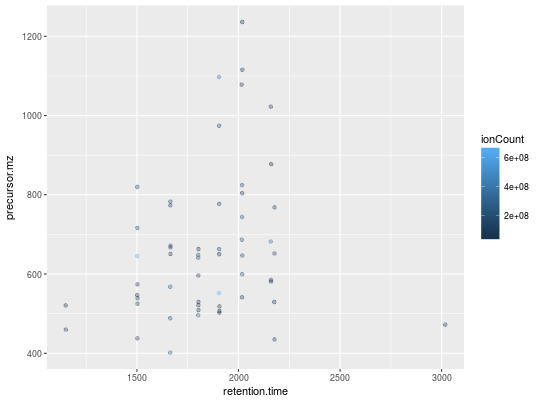
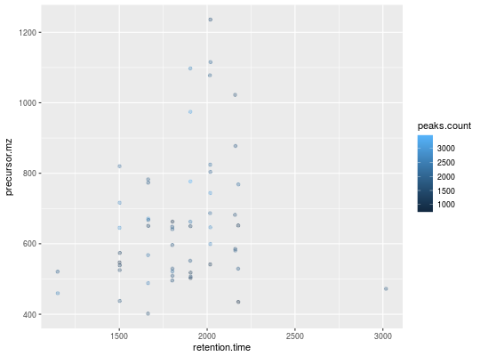
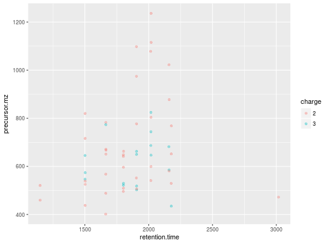

These methods plot the retention time vs. precursor MZ for the whole
"MSnExp" experiment. Individual dots will be
colour-coded to describe individual spectra's peaks count, total ion
count, precursor charge (MS2 only) or file of origin.
The methods make use the ggplot2 system. An object of class
'ggplot' is returned invisibly.
"MSnExp" or a
data.frame. In the latter case, the data frame must have numerical
columns named 'retention.time' and 'precursor.mz' and one of 'tic',
'file', 'peaks.count' or 'charge', depending on the z
parameter. Such a data frame is typically generated using the
header method on "MSnExp" object.
signature(object = "MSnExp", ...)signature(object = "data.frame", ...)The plotDensity and plotMzDelta methods
for other QC plots.
itraqdata#> Object of class "MSnExp" (in memory) #> Object size in memory: 1.88 Mb #> - - - Spectra data - - - #> MS level(s): 2 #> Number of spectra: 55 #> MSn retention times: 19:9 - 50:18 minutes #> - - - Processing information - - - #> Data loaded: Wed May 11 18:54:39 2011 #> Updated from version 0.3.0 to 0.3.1 [Fri Jul 8 20:23:25 2016] #> MSnbase version: 1.1.22 #> - - - Meta data - - - #> phenoData #> rowNames: 1 #> varLabels: sampleNames sampleNumbers #> varMetadata: labelDescription #> Loaded from: #> dummyiTRAQ.mzXML #> protocolData: none #> featureData #> featureNames: X1 X10 ... X9 (55 total) #> fvarLabels: spectrum ProteinAccession ProteinDescription #> PeptideSequence #> fvarMetadata: labelDescription #> experimentData: use 'experimentData(object)'plot2d(itraqdata,z="ionCount")plot2d(itraqdata,z="peaks.count")plot2d(itraqdata,z="charge")